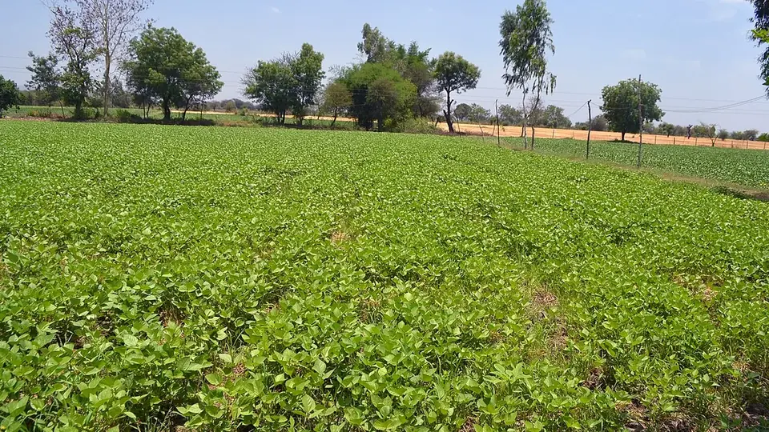

मुख्यमंत्री किसान कल्याण योजना (MP)
Mukhyamantri Kisan Kalyan Yojana Madhya Pradesh — Eligibility, Installments & Status
पीएम किसान के ₹6,000 के ऊपर मध्य प्रदेश शासन ₹6,000 और देता है — कुल ₹12,000 सालाना। पर यह अपने आप नहीं आता; e-KYC और आधार-लिंक खाता अलग से करना पड़ता है।
✍️ Kunal Rajput — KrashiMitra⏱️ 9 मिनट पढ़ें📅 अगस्त 2026

होशंगाबाद (मध्य प्रदेश) का एक खेत — योजना की किस्त इसी तरह के भू-अभिलेख से जुड़ी होती है।
मध्य प्रदेश के किसान के लिए साल के ₹12,000 — दो योजनाएँ, छह किस्तें
💰
₹6,000
राज्य की ओर से, हर साल
🧾
₹2,000 × 3
किस्तों में DBT से
🔐
e-KYC
अटकने की सबसे बड़ी वजह
📖
भूमिका
मध्य प्रदेश के किसान को हर साल ₹6,000 केंद्र सरकार की पीएम किसान सम्मान निधि से मिलते हैं — यह बात लगभग सब जानते हैं। जो कम लोग जानते हैं वह यह है कि राज्य सरकार उसी के ऊपर ₹6,000 और देती है। योजना का नाम है मुख्यमंत्री किसान कल्याण योजना, और दोनों मिलाकर एक पात्र किसान के खाते में साल के ₹12,000 पहुँचते हैं।
सबसे बड़ी गलतफहमी यही है कि "पीएम किसान आ रहा है तो राज्य वाला अपने आप आ जाएगा"। ऐसा नहीं है। पीएम किसान का लाभार्थी होना पहली शर्त है, पूरी शर्त नहीं — e-KYC, आधार से जुड़ा बैंक खाता और भू-अभिलेख में नाम का मिलान अलग से पूरा करना पड़ता है, और इन्हीं तीन में अटककर हर किस्त पर हज़ारों किसानों का पैसा रुक जाता है। इस लेख में पात्रता, ज़रूरी दस्तावेज़, आवेदन का तरीका, स्टेटस देखने का तरीका और पैसा न आने पर क्या करें — सब आसान हिंदी में।
विज्ञापन
🏛️
मुख्यमंत्री किसान कल्याण योजना क्या है?
यह मध्य प्रदेश शासन की अपनी योजना है, जो सितंबर 2020 में शुरू हुई थी। इसका मकसद सीधा है — केंद्र की पीएम किसान सम्मान निधि के ऊपर राज्य की ओर से अतिरिक्त नकद सहायता देना, ताकि खाद-बीज के समय किसान के हाथ में पैसा रहे।
शुरुआत में यह राशि ₹4,000 प्रति वर्ष थी, जो दो किस्तों में दी जाती थी। बाद में इसे बढ़ाकर ₹6,000 प्रति वर्ष कर दिया गया और अब यह ₹2,000-₹2,000 की तीन बराबर किस्तों में सीधे किसान के बैंक खाते में DBT के ज़रिए भेजी जाती है। राज्य में 81 लाख से ज़्यादा किसान इसके दायरे में आते हैं।
💡
यह अलग योजना है, पीएम किसान का हिस्सा नहीं। दोनों की किस्तें अलग-अलग तारीखों पर आती हैं और अलग-अलग खातों से जारी होती हैं। इसीलिए यह पूरी तरह मुमकिन है कि पीएम किसान की किस्त आ जाए और राज्य वाली अटकी रहे — या इसका उल्टा।
💰
कितना पैसा, कितनी किस्तों में
योजना
किसकी
सालाना राशि
किस्तें
पीएम किसान सम्मान निधि
केंद्र सरकार
₹6,000
₹2,000 × 3
मुख्यमंत्री किसान कल्याण योजना
मध्य प्रदेश शासन
₹6,000
₹2,000 × 3
कुल
—
₹12,000
6 किस्तें
ध्यान रखने वाली बात — यह राशि प्रति किसान परिवार है, प्रति व्यक्ति नहीं। एक ही परिवार के पति, पत्नी और नाबालिग बच्चों को अलग-अलग लाभ नहीं मिलता, भले ही ज़मीन तीनों के नाम अलग-अलग दर्ज हो।
विज्ञापन
✔️
पात्रता — किसे मिलेगा
मध्य प्रदेश का मूल निवासी किसान: ज़मीन मध्य प्रदेश में होनी चाहिए और किसान राज्य का निवासी होना चाहिए।
पीएम किसान सम्मान निधि का लाभार्थी: राज्य की यह योजना उसी सूची पर चलती है। पीएम किसान में नाम नहीं है तो यह किस्त भी नहीं आएगी।
अपने नाम पर कृषि भूमि: भू-अभिलेख (खसरा/खतौनी) में किसान का नाम दर्ज होना चाहिए।
e-KYC पूरी: आधार आधारित e-KYC के बिना किस्त रुक जाती है — यह अब तक की सबसे आम वजह है।
आधार से जुड़ा सक्रिय बैंक खाता: खाता चालू हो, आधार से लिंक हो और DBT सक्षम हो। बंद खाते, संयुक्त खाते और वॉलेट खाते में पैसा नहीं जाता।
नाम का मिलान: भू-अभिलेख में दर्ज नाम और आधार कार्ड का नाम मिलना चाहिए। "रामप्रसाद" बनाम "राम प्रसाद" जैसा छोटा फर्क भी भुगतान रोक देता है।
अपात्र कौन: आयकर देने वाले, संस्थागत भूमिधारक, संवैधानिक पदों पर रहे व्यक्ति, सरकारी कर्मचारी और पेंशनभोगी (चतुर्थ श्रेणी/मल्टी-टास्किंग स्टाफ को छोड़कर), तथा डॉक्टर-वकील-इंजीनियर जैसे पंजीकृत पेशेवर — पीएम किसान की अपात्रता की शर्तें यहाँ भी लागू होती हैं।
📄
ज़रूरी दस्तावेज़
दस्तावेज़
किसलिए ज़रूरी है
आधार कार्ड
पहचान और e-KYC — नाम का मिलान यहीं से होता है
समग्र आईडी
मध्य प्रदेश का निवासी होने की पहचान
खसरा / खतौनी / ऋण पुस्तिका
ज़मीन आपके नाम है, इसका प्रमाण
बैंक पासबुक की कॉपी
DBT के लिए खाता व IFSC
आधार से जुड़ा मोबाइल नंबर
OTP और किस्त का SMS इसी पर आता है
पासपोर्ट साइज़ फोटो
आवेदन के साथ
💡
मोबाइल नंबर आधार से जुड़ा होना सबसे ज़रूरी है। e-KYC का OTP उसी नंबर पर जाता है। अगर पुराना नंबर बंद हो चुका है तो पहले नज़दीकी आधार सेवा केंद्र पर नंबर अपडेट कराइए — उसके बिना e-KYC ऑनलाइन नहीं होगी।
📝
आवेदन कैसे करें
इस योजना का अलग से बड़ा आवेदन फॉर्म नहीं भरना पड़ता — असल काम पीएम किसान में नाम दर्ज कराना और अपना रिकॉर्ड दुरुस्त रखना है। रास्ता यह है:
पीएम किसान में पंजीयन कराएँ: अगर अब तक नाम नहीं है तो पटवारी या नज़दीकी CSC/कियोस्क के ज़रिए पीएम किसान में पंजीयन कराइए। राज्य की किस्त इसी सूची से निकलती है।
पटवारी से भू-अभिलेख की प्रविष्टि जाँचवाएँ: खसरे में नाम, रकबा और बटांकन सही दर्ज है या नहीं — यह पटवारी ही ठीक करा सकता है।
e-KYC पूरी कराएँ: यह पीएम किसान पोर्टल पर OTP से, या CSC पर बायोमेट्रिक से हो जाती है।
बैंक खाते को आधार से जुड़वाएँ: बैंक शाखा जाकर आधार सीडिंग और DBT चालू कराइए। सिर्फ खाते में आधार नंबर लिखा होना काफी नहीं है।
SAARA पोर्टल पर स्थिति देखें: राज्य की किस्त की स्थिति saara.mp.gov.in पर आधार या पीएम किसान आईडी डालकर देखी जा सकती है।
⚠️
पंजीयन, e-KYC और स्थिति देखना — तीनों काम ग्राम पंचायत, तहसील और सहकारी समिति पर निःशुल्क होते हैं। कोई भी व्यक्ति "किस्त चालू करा दूँगा" कहकर पैसे माँगे तो वह दलाल है। योजना की कोई राशि दलाल के ज़रिए नहीं आती, और किसी भी सरकारी अधिकारी को आपका OTP या बैंक पिन नहीं चाहिए होता।
🔎
किस्त नहीं आई? — एक-एक करके ये जाँचिए
वजह
कहाँ ठीक होगी
e-KYC अधूरी
पीएम किसान पोर्टल (OTP) या CSC (बायोमेट्रिक)
बैंक खाता आधार से लिंक नहीं
अपनी बैंक शाखा — आधार सीडिंग + DBT चालू
आधार और भू-अभिलेख में नाम अलग
पटवारी / तहसील कार्यालय
खसरे में नाम या रकबा गलत
पटवारी — भू-अभिलेख सुधार
खाता बंद, निष्क्रिय या संयुक्त
बैंक शाखा — नया एकल खाता चालू कराएँ
मोबाइल नंबर बदल गया
आधार सेवा केंद्र, फिर पोर्टल पर अपडेट
अपात्र श्रेणी में दर्ज हो गए
तहसीलदार / कृषि विभाग में आपत्ति दर्ज करें
इसके बाद भी बात न बने तो CM हेल्पलाइन 181 पर शिकायत दर्ज कराइए, या कृषि विभाग के 0755-2551717 पर संपर्क कीजिए। शिकायत दर्ज कराते समय अपना पीएम किसान पंजीयन नंबर और खसरा नंबर पास रखिए — इनके बिना शिकायत आगे नहीं बढ़ती।
🚫
ये गलतियाँ कभी न करें
किसी को OTP बताना — योजना की किस्त के नाम पर आने वाला हर फोन जो OTP माँगे, ठगी है। सरकार कभी OTP नहीं माँगती।
दलाल को पैसा देना — पंजीयन और e-KYC सरकारी केंद्रों पर निःशुल्क हैं।
e-KYC को टालते रहना — यह अकेली सबसे बड़ी वजह है जिससे किस्त रुकती है, और इसे ठीक करने में सिर्फ कुछ मिनट लगते हैं।
परिवार के हर सदस्य के लिए अलग आवेदन करना — लाभ प्रति परिवार है। अलग-अलग आवेदन बाद में वसूली का नोटिस बनकर लौटते हैं।
अपात्र होते हुए भी किस्त लेते रहना — आयकरदाता या सरकारी कर्मचारी होते हुए ली गई राशि वापस माँगी जाती है।
बैंक खाता बदलकर पोर्टल पर अपडेट न करना — पुराने बंद खाते में भेजा गया पैसा लौट जाता है और अगली किस्त तक अटक जाता है।
"किस्त आ ही जाएगी" मानकर स्थिति कभी न देखना — साल में एक बार saara.mp.gov.in पर अपना नाम जाँच लेना काफी है।
✅
निष्कर्ष
तीन बातें याद रखिए। पहली — मुख्यमंत्री किसान कल्याण योजना के ₹6,000 पीएम किसान के ₹6,000 के अतिरिक्त हैं, दोनों मिलाकर साल के ₹12,000 बनते हैं। दूसरी — यह अपने आप नहीं आती; पीएम किसान में नाम, पूरी e-KYC और आधार से जुड़ा चालू बैंक खाता — तीनों ज़रूरी हैं। तीसरी — हर काम सरकारी केंद्र पर मुफ्त है, और OTP माँगने वाला हर फोन ठगी है।
साल में एक बार अपना नाम जाँच लेना, तीन किस्तें छूट जाने से कहीं सस्ता है।
⚠️
सरकारी योजनाओं के नियम, राशि और किस्त की तारीखें समय-समय पर बदलती रहती हैं। आवेदन या शिकायत से पहले saara.mp.gov.in और अपने तहसील / कृषि विभाग कार्यालय से मौजूदा नियम ज़रूर पक्के कर लें। कृषि मित्र एक जानकारी देने वाला मंच है — हम न किसी योजना के एजेंट हैं, न आवेदन कराते हैं, न किस्त दिलाते हैं।
विज्ञापन
❓
अक्सर पूछे जाने वाले सवाल
1मुख्यमंत्री किसान कल्याण योजना में कितने रुपये मिलते हैं?
इस योजना में मध्य प्रदेश शासन की ओर से हर साल ₹6,000 मिलते हैं, जो ₹2,000-₹2,000 की तीन बराबर किस्तों में सीधे बैंक खाते में भेजे जाते हैं। यह राशि पीएम किसान सम्मान निधि के ₹6,000 के अतिरिक्त है, इसलिए एक पात्र किसान को कुल ₹12,000 प्रति वर्ष मिलते हैं।
2क्या पीएम किसान और मुख्यमंत्री किसान कल्याण योजना दोनों का पैसा एक साथ मिल सकता है?
हाँ — दोनों का लाभ एक साथ मिलता है और कुल ₹12,000 सालाना बनते हैं। ये दो अलग योजनाएँ हैं: ₹6,000 केंद्र सरकार की पीएम किसान सम्मान निधि से और ₹6,000 मध्य प्रदेश शासन की मुख्यमंत्री किसान कल्याण योजना से। दोनों की किस्तें अलग-अलग तारीखों पर आती हैं।
3मुख्यमंत्री किसान कल्याण योजना की पात्रता क्या है?
पात्रता की सबसे बड़ी शर्त है कि किसान पीएम किसान सम्मान निधि का लाभार्थी हो, मध्य प्रदेश का निवासी हो और भू-अभिलेख में उसके नाम पर कृषि भूमि दर्ज हो। इसके साथ e-KYC पूरी, आधार से जुड़ा चालू बैंक खाता और आधार व खसरे में नाम का मिलान होना ज़रूरी है। आयकरदाता, सरकारी कर्मचारी और पेंशनभोगी अपात्र हैं।
4मुख्यमंत्री किसान कल्याण योजना का स्टेटस कैसे चेक करें?
स्थिति saara.mp.gov.in पोर्टल पर आधार नंबर या पीएम किसान आईडी डालकर देखी जा सकती है। यही मध्य प्रदेश शासन का आधिकारिक पोर्टल है जिस पर लाभार्थी सूची और भुगतान की स्थिति दोनों दिखती हैं। किसी निजी वेबसाइट या ऐप पर अपना आधार नंबर न डालें।
5किस्त का पैसा नहीं आया तो क्या करें?
सबसे पहले e-KYC जाँचिए — किस्त रुकने की यह सबसे आम वजह है। इसके बाद देखिए कि बैंक खाता आधार से लिंक और चालू है या नहीं, और आधार तथा भू-अभिलेख में नाम एक जैसा है या नहीं। सुधार पटवारी, तहसील या बैंक शाखा में होता है; बात न बने तो CM हेल्पलाइन 181 या कृषि विभाग के 0755-2551717 पर शिकायत दर्ज कराइए।
6क्या मुख्यमंत्री किसान कल्याण योजना के लिए अलग से आवेदन करना पड़ता है?
अलग से बड़ा फॉर्म नहीं भरना पड़ता — राज्य की यह किस्त पीएम किसान की लाभार्थी सूची से ही निकाली जाती है। असल काम यह है कि पीएम किसान में आपका नाम दर्ज हो, e-KYC पूरी हो और भू-अभिलेख की प्रविष्टि सही हो। पंजीयन ग्राम पंचायत, तहसील, सहकारी समिति या CSC के ज़रिए कराया जा सकता है।
7क्या एक ही परिवार के दो लोगों को अलग-अलग किस्त मिल सकती है?
नहीं — यह लाभ प्रति किसान परिवार है, प्रति व्यक्ति नहीं। पति, पत्नी और नाबालिग बच्चों को मिलाकर एक ही परिवार माना जाता है, भले ही ज़मीन सबके नाम अलग-अलग दर्ज हो। अलग-अलग आवेदन करने पर बाद में राशि की वसूली का नोटिस आ सकता है।
8योजना का पैसा दिलाने के लिए किसी को फीस देनी पड़ती है क्या?
बिल्कुल नहीं — पंजीयन, e-KYC और स्थिति देखना ग्राम पंचायत, तहसील और सहकारी समिति पर पूरी तरह निःशुल्क है। जो व्यक्ति किस्त चालू कराने के नाम पर पैसे या OTP माँगे, वह ठगी कर रहा है। कोई भी सरकारी विभाग किसान से OTP या बैंक पिन नहीं माँगता।
🌾
KrashiMitra.in — आपका विश्वसनीय कृषि साथी
मंडी भाव, सरकारी योजनाएं, बीज-खाद की जानकारी और फसल रोग उपचार — सब कुछ हिंदी में।